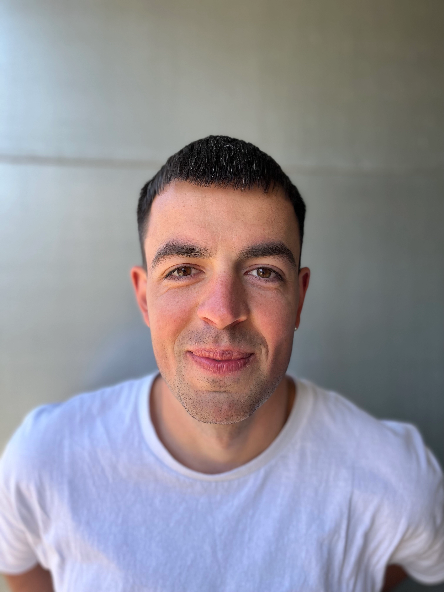

Om mig
Mit navn er Rasmus Ricks. Jeg studerer multimediedesign på kea. Jeg har valgt kea fordi, at jeg
synes, grafisk design er
spændende. Jeg holder af at være kreativ og jeg synes derfor procesen i at producere et produkt er
fedt, så som at lave
en hjemmeside.
Jeg har gået på Rudolf Steiner Skole hele mit liv. For dem der ikke ved hvad en Rudolf Steiner
skole
er, så er det en
helt normal skole, men med større fokus på det kreative så som grafik, kunst, tegning mm. Efter
gymnasiet holdte jeg
fire sabbatår, hvor jeg var på Silkeborg Højskole. Efter opholdet rejste jeg tre uger til New
Zealand sammen med en
lille gruppe fra højskolen, og jeg backpackede videre med fem gutter i Asien. Da jeg kom hjem,
tog
jeg ni måneder i
Beredskabet for at prøve noget nyt. Efter beredskabet kunne jeg mærke, at jeg gerne ville i gang
med
noget, jeg var
interesseret i. Jeg valgte kea, fordi jeg føler, jeg kan få mange ting ud af uddannelsen.
I min fritid holder jeg meget af at være sammen med mine venner og at være aktiv. Det kan være
alt
fra at klatre, til
friluftsliv til at køre en lækker tur på min motorcykel. Ellers arbejder jeg i Torvhallerne, i
en
lille café der hedder
Norcino.

cv
Uddannelse
- Folkeskole Rudolf Steiner, Vidar Skolen - 2007 / 2016
- Hf Rudolf Steiner, Vidar Skolen - 2016 / 2018
- Beredskabet Næstved - 2022
- Multimediedesigner - 2023 /2025
Erfaringer
- Uddannet Brandmand.
- Multimediedesigner evner:
-
Html, Css, Java script
UX, Illustrator, Photoshop, Premiere pro